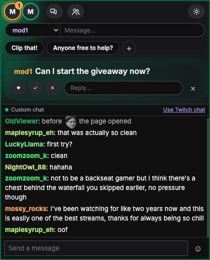
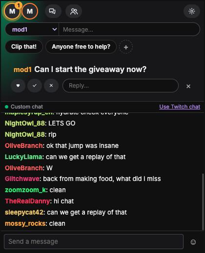
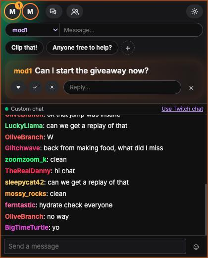
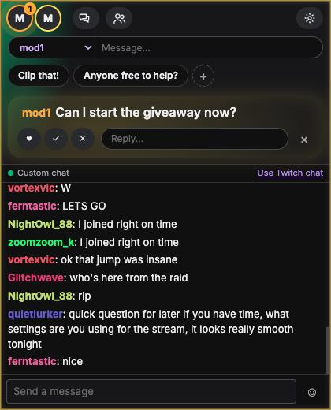
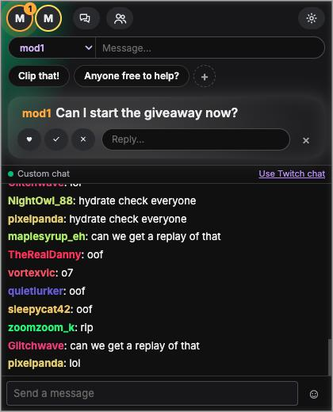
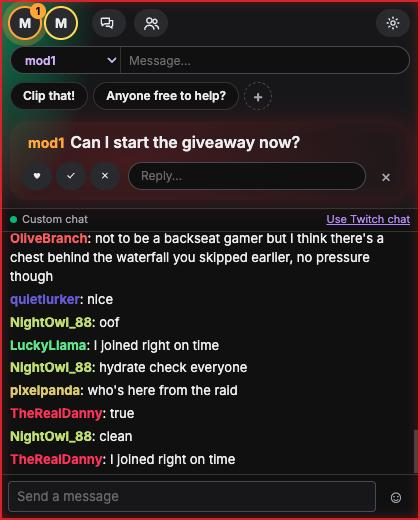
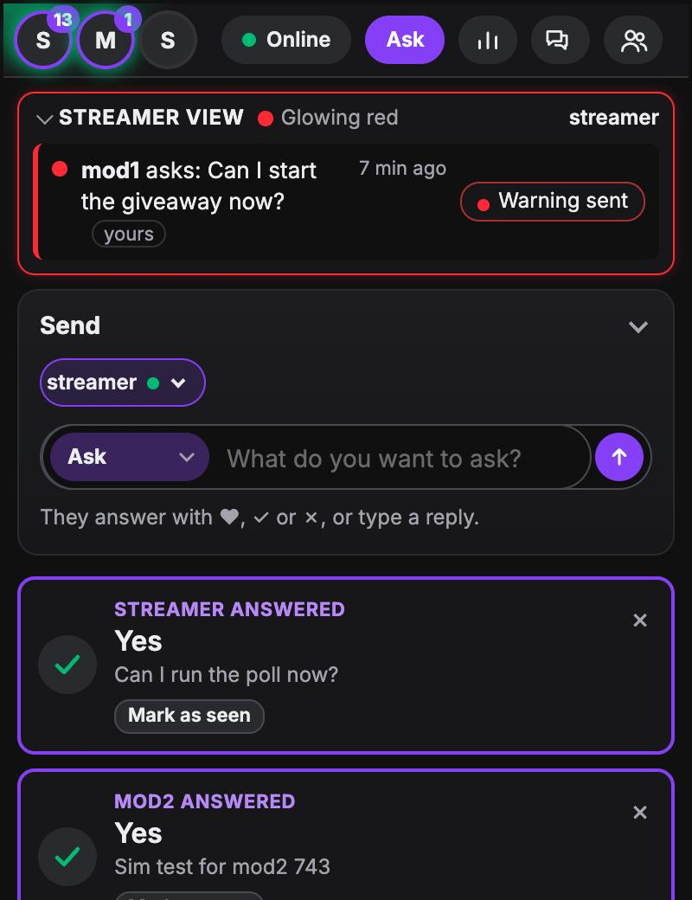
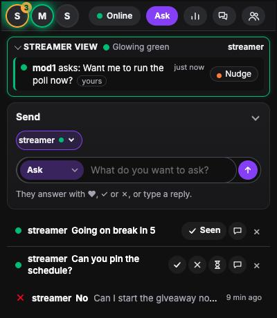
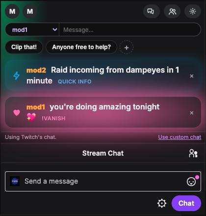
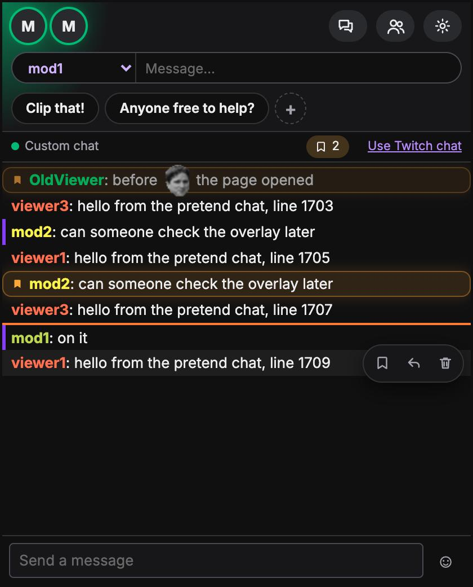

Streamer Buddy System · update · 6 November 2026
A calmer OBS dock for the streamer, and a side panel that lets mods see what the streamer sees, nudge, and warn when something can't wait.
Highlights
Everything waiting shows in one calm spot under the streamer's bar, taking turns. No pop-out windows.
♥ ✓ ✗ right in the bar, on any question, or a quick typed reply.
Questions arrive green and only move up when the mod who asked taps Nudge.
Six quick taps sends the streamer a red heads-up: trouble in chat, a safety issue.
Mods see exactly what's on the streamer's dock before adding anything more.
Slim lists for mods, full-size notes for the streamer, and chat bookmarks.
For the streamer · OBS dock

For the streamer · the glow





Nothing climbs on its own. The words always stay readable; only the colour behind them fades.
For mods · nudge and warning

For mods · Twitch Space side panel

For the streamer · notes

For the streamer · custom chat (optional)

For the streamer · at a glance
Each mod's picture in the bar shows how recently they chatted.
Get started
chrome://extensions, Developer mode, Load unpacked.Streamer Buddy System, URLhttps://handsome-tom.github.io/streamer-buddy-system/?livechatComing next